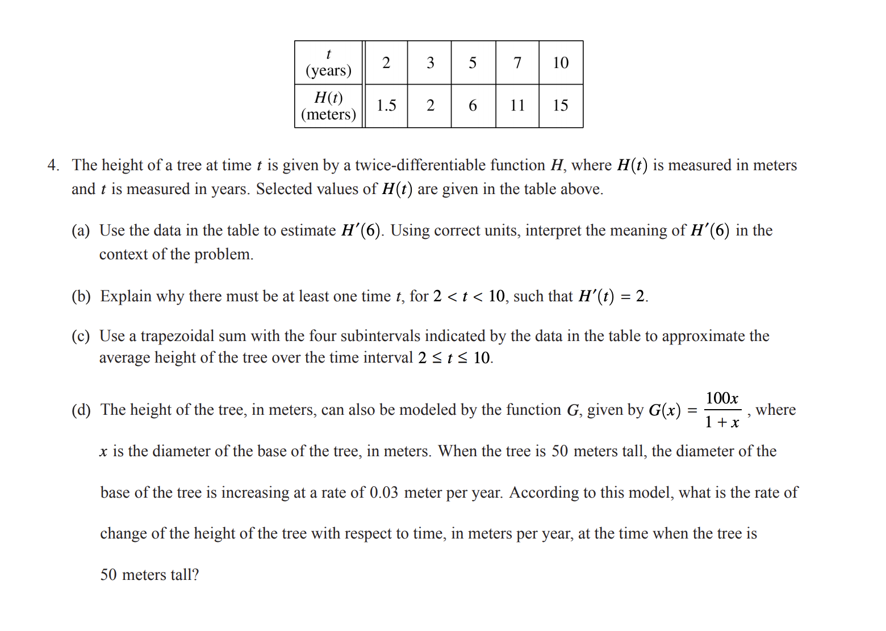

Applied Optimization¶
OBJECTIVES
Use derivatives to determine maximum and minimum values on a closed interval
import matplotlib.pyplot as plt
import numpy as np
import pandas as pd
import sympy as sy
Derivative Review¶
In your own words define the following:
Derivative
Critical Value
Inflection Point
Extreme Value
Find all critical values of the following functions. Use these to determine where the function is increasing decreasing, concave up, and concave down:
\(f(x) = 3x^4 - 8x^3 - 18t^2\)
Determine any maximum or minimum values using the second derivative test:
\(f(x) = x + \sin^2(x)\)
AP Calculus Free Response Derivatives

Applied Optimization: Problems on Closed Bounded Intervals¶
The following examples come from OpenStax section on applied optimiazation here.
Maximizing Area of Garden¶
A rectangular garden is to be constructed using a rock wall as one side of the garden and wire fencing for the other three sides. Given 100 ft of wire fencing, determine the dimensions that would create a garden of maximum area. What is the maximum area?
QUESTION: Determine the maximum area if we want to make the same rectangular garden as above, but we have 200 ft of fencing.
Maximize the Volume of a Box¶
An open-top box is to be made from a 24 in. by 36 in. piece of cardboard by removing a square from each corner of the box and folding up the flaps on each side. What size square should be cut out of each corner to get a box with the maximum volume?
QUESTION: Suppose the dimensions of the cardboard from above are 20 in. by 30 in. Let \(x\) be the side length of each square and write the volume of the open-top box as a function of \(x\). Determine the domain of consideration for \(x\).
Maximizing Revenue¶
Owners of a car rental company have determined that if they charge customers \(p\) dollars per day to rent a car, where \(50 \leq q \leq 200\), the number of cars \(n\) they rent per day can be modeled by the linear function \(n(p) = 1000 - 5p\). If they charge \\(50 per day or less, they will rent all their cars. If they charge \\\)200 per day or more, they will not rent any cars. Assuming the owners plan to charge customers between \\(50 per day and \\\)200 per day to rent a car, how much should they charge to maximize their revenue?
QUESTION: A car rental company charges its customers \(p\) dollars per day, where \(60 \leq p \leq 150\). It has found that the number of cars rented per day can be modeled by the linear function \(n(p) = 750 - 5p\). How much should the company charge each customer to maximize revenue?
PROBLEMS
To carry a suitcase on an airplane, the length + width + height of the box must be less than or equal to 62in. Assuming the height is fixed, show that the maximum volume is \(V = h(31 - (\frac{1}{2})h)^2\). What height allows you to have the largest volume?
Find the positive integer that minimizes the sum of the number and its reciprocal.
Find two positive integers such that their sum is 10, and minimize and maximize the sum of their squares.
You have 400ft of fencing to construct a rectangular pen for cattle. What are the dimensions of the pen that maximize the area?
You have 800ft of fencing to make a pen for hogs. If you have a river on one side of your property, what is the dimension of the rectangular pen that maximizes the area?
You need to construct a fence around an area of 1600ft\(^2\). What are the dimensions of the rectangular pen to minimize the amount of material needed?
You are the manager of an apartment complex with 50 units. When you set rent at \\(800/month, all apartments are rented. As you increase rent by \\\)25/month, one fewer apartment is rented. Maintenance costs run \$50/month for each occupied unit. What is the rent that maximizes the total amount of profit?